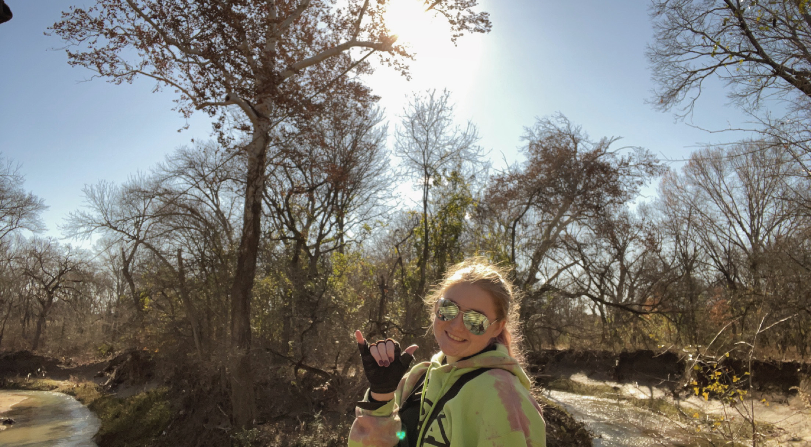

Lora Wargo
Lora Wargo is a well-rounded junior studying at Trinity University, majoring in Computer Science.
She is also an Air Force Reserves Officer Training Corps cadet at Detachment 842, which is located at the Univeristy of Texas at San Antonio.

Current Projects
Personal Website
Private Pilot's License